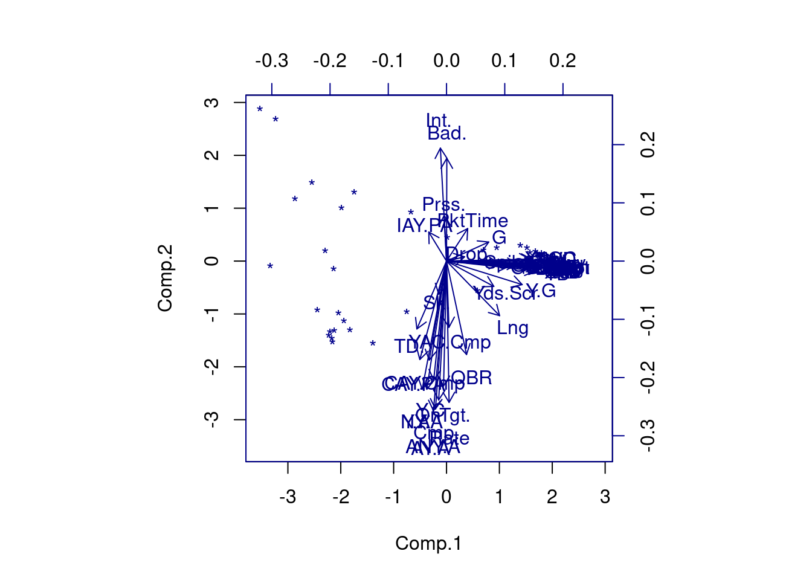

Code
library(ggplot2)
library(corrr)
library(ggcorrplot)
library(FactoMineR)
library(factoextra)Welcome! Want to learn more? See two factoextra-related books at https://goo.gl/ve3WBalibrary(ggplot2)
library(corrr)
library(ggcorrplot)
library(FactoMineR)
library(factoextra)Welcome! Want to learn more? See two factoextra-related books at https://goo.gl/ve3WBaPrincipal Component Analysis (PCA) is a widely used statistical method for reducing the dimensionality of multivariate data. The goal of PCA is to transform the original variables into a new set of uncorrelated variables called principal components. This literature review aims to explore the methods and applications of PCA used in previous data analysis. While we will review the use of PCA in several analytical fields, our use of PCA focuses on National Football League data. Our analysis can be found below. In the simplest terms, PCA acts to rotate the axis of different variables to better understand the variance in the data. The variables with the most important relationships are kept as they explain the most variance in the dataset. In this way PCA is used to decrease the dimensionality of a dataset. The first Principal component is calculated by adding the variables once they have been multiplied by a weighted value. The next Principal component is calculated using another variable as long as that variable is uncorrelated to the first. This continues until the number of Principal Components equals the number of variables or until you have reached a determined cutoff point (Holland 2008). The four options provided by Holland to be used as a cutoff point are if the increase of variance explained from one variable to the next is minimal. The second is to set a limit for variance explained, possibly 90%, and ignore all PCs after this limit is reached. The third is to use a correlation matrix and the variance is less than 1. Finally, the fourth, is to ignore the last PCs in the list if their variance explained is equal. In all cases the distribution of the variables data needs to be normally distributed for PCA to work correctly.
PCA is a powerful tool that can be applied to seemingly any field. Our review has found the application of PCA in remote sensing, public health, finance, and sports. In a paper on remote sensing by Chavez (1989), the author proposed a method for extracting spectral contrast from Landsat Thematic Mapper Image data. Chavez used Selective Principal Component Analysis (SPCA), a modification of the traditional PCA. This modification was used to extract principal components that are more informative for specific image analysis applications. The author demonstrated that SPCA can improve the discrimination between land cover classes in remote sensing applications. In the field of public health Nguessan et al. (2019) performed a systematic review and meta-analysis of morbidity and mortality among the United States homeless population using PCA. The authors applied PCA to a set of variables related to health outcomes among homeless individuals. The study showed that PCA can be a useful tool for summarizing complex health data and identifying the most important factors that contribute to health outcomes. Oualy (2021) investigated the relationship between income inequality and socio-political instability in sub-Saharan Africa using PCA. The author used PCA to construct an index of socio-political instability based on political violence, government stability, and human rights violations. The study demonstrated that PCA can be an effective method for combining multiple indicators into a single index and identifying the underlying factors that contribute to socio-political instability. In the field of Finance, Fang et al. (2018) proposed a stable systemic risk ranking method for China’s banking sector based on PCA. The authors applied PCA to a set of variables related to the financial performance of Chinese banks and identified the most significant principal components that explain the variance in the data. The study showed how PCA can be used to measure systemic risk in the banking sector and to identify the most important factors that contribute to financial stability. Finally, PCA is often used in Climate and weather analysis. Jolliffe 1990 used PCA to reduce dimensionality related to meteorology and climatology. The author outlines the importance of interpreting the PCA results in the context of the original data used. In another article related to climate, Horel (1984) used PCA for certain geophysical phenomena where cross-spectral analysis comes up short. The author used complex time series data to compute complex PCs from cross-covariance and cross-correlation matrices.
The examples above show the use of PCA in several fields. Our focus is the use of PCA in sports. Due to the complex nature of sports statistics, PCA has been used by many authors in the past to reduce the dimensionality of sports data sets. Moura et al. (2014) analyzed European football game-related team statistics using PCA and clustering analysis. The authors applied PCA to a set of variables related to offensive and defensive performance and identified the most significant principal components that explain the variance in the data. The study showed that PCA can be a useful tool for summarizing complex sports data and identifying the most important factors that contribute to overall team performance. An article by Pino-Ortega et al. (2021) conducted a review of the most relevant variables for training design, performance analysis, and talent identification in European football, basketball, and rugby using PCA. The authors applied PCA to a set of variables related to physical fitness, technical skills, and tactical performance and identified the most significant principal components that explain the variance in the data. The study showed that PCA can be a useful tool for summarizing complex sports data and identifying the most important factors that contribute to performance. Like Pino-Ortega’s article, Jones 2016 used PCA to analyze individual player’s performance in the United States College Football League. The author used Principal Components Analysis to try to find a better statistical method to rank professional quarterback draft prospects than the commonly used Quarterback Rating. The target variable was log transformed. After PCA, the model included only two variables after starting from a very large dataset.
Our interest was also in sports data. We decided to use a dataset using the American National Football League for our analysis. This too has also been used many times in previous studies. Watnik et. al. 2001 used a PCA analysis completed on an NFL dataset from the year 2000 regular season. PCA was used to determine each team’s strength. The PCA reduced the dataset to 2 Principal components. The authors found their best regression, with an R square value of 83% when using only the AFC teams. Using all teams and all variables resulted in a R square of only 21%.
While football has remained one of the most watched sports for some time, the popularity of fantasy sports has exploded more recently. To capitalize on fantasy sports, several betting companies have started hosting fantasy football competitions. With these competitions comes the use of analysis to find a competitive edge. With the large datasets involved Sugar et. al. attempts a PCA to reduce dimensionality and extract the first 2 principal eigenvectors. The author then projected the 7-dimensional RB and WR scaled data onto the reduced 2-dimensional PCA space. Visualizing the PCA the author sees that the distribution of WRs and RBs suggests that the x-axis roughly corresponds to a player’s receiving ability, while the y-axis corresponds to their rushing ability. When used with clustering analysis, the PCA values show a way to generate more effective subsets without the risk of overfitting the models. The authors best results show that they were able to reduce the training set for the model by a factor of 3 without significantly increasing variance.
In conclusion, PCA is a powerful statistical method for reducing the dimensionality of multivariate data and identifying the most significant factors that contribute to the variance in the data. This literature review demonstrated the wide range of applications of PCA in various fields, including remote sensing, public health, sports, and finance. PCA can be a useful tool for summarizing complex data, identifying the most important factors that contribute to the outcomes of interest, and providing insights for decision-making.
our_data = read.csv("NFL_Data.csv")
our_data[is.na(our_data)] = 0numerical_data = our_data[,2:51]
head(numerical_data,5) G GS Cmp Att Cmp. Yds TD TD. Int Int. X1D Lng Y.A AY.A Y.C Y.G Rate
1 17 17 435 648 67.1 5250 41 6.3 12 1.9 272 67 8.1 8.5 12.1 308.8 105.2
2 17 17 477 699 68.2 4739 25 3.6 10 1.4 228 55 6.8 6.9 9.9 278.8 93.2
3 17 17 490 733 66.8 4694 25 3.4 9 1.2 237 63 6.4 6.5 9.6 276.1 90.7
4 17 17 424 643 65.9 4547 29 4.5 14 2.2 230 66 7.1 7.0 10.7 267.5 92.5
5 16 16 414 606 68.3 4475 35 5.8 12 2.0 222 60 7.4 7.6 10.8 279.7 100.8
QBR Sk Yds.1 Sk. NY.A ANY.A X4QC GWD IAY IAY.PA CAY CAY.Cmp CAY.PA YAC
1 77.6 26 188 3.9 7.51 7.93 4 4 4686 7.2 2397 5.5 3.7 2853
2 58.2 38 206 5.2 6.15 6.22 4 5 4476 6.4 2246 4.7 3.2 2493
3 52.5 22 160 2.9 6.01 6.13 4 5 4876 6.7 2379 4.9 3.2 2315
4 49.9 46 329 6.7 6.12 6.05 8 8 4800 7.5 2569 6.1 4.0 1978
5 58.7 41 259 6.3 6.52 6.76 3 4 4121 6.8 2319 5.6 3.8 2156
YAC.Cmp Bats ThAwy Spikes Drops Drop. BadTh Bad. OnTgt OnTgt. Sk.1 PktTime
1 6.6 8 33 0 33 0.054 95 0.154 474 0.771 26 2.6
2 5.2 23 25 2 39 0.058 87 0.129 508 0.756 38 2.5
3 4.7 11 22 4 32 0.045 116 0.164 545 0.771 22 2.2
4 4.7 14 27 3 25 0.041 93 0.152 469 0.765 46 2.5
5 5.2 24 17 1 34 0.058 76 0.129 465 0.791 41 2.2
Bltz Hrry Hits Prss Prss. Scrm Yds.Scr
1 160 58 56 140 0.194 46 7.5
2 182 50 72 160 0.211 22 6.5
3 130 23 55 100 0.132 3 1.0
4 159 36 84 166 0.237 12 9.1
5 110 22 48 111 0.165 27 7.5data_normalized = scale(numerical_data)corr_matrix = cor(data_normalized)ggcorrplot(corr_matrix)
data.pca = princomp(corr_matrix)
summary(data.pca)Importance of components:
Comp.1 Comp.2 Comp.3 Comp.4 Comp.5
Standard deviation 1.9535398 0.9144781 0.36833720 0.36063536 0.22811970
Proportion of Variance 0.7455282 0.1633677 0.02650396 0.02540716 0.01016588
Cumulative Proportion 0.7455282 0.9088959 0.93539982 0.96080699 0.97097287
Comp.6 Comp.7 Comp.8 Comp.9
Standard deviation 0.196138587 0.168259053 0.143968290 0.118130113
Proportion of Variance 0.007515288 0.005530653 0.004049051 0.002726094
Cumulative Proportion 0.978488157 0.984018810 0.988067861 0.990793954
Comp.10 Comp.11 Comp.12 Comp.13
Standard deviation 0.104407138 0.096556411 0.08369692 0.0673521255
Proportion of Variance 0.002129511 0.001821301 0.00136848 0.0008861804
Cumulative Proportion 0.992923465 0.994744766 0.99611325 0.9969994270
Comp.14 Comp.15 Comp.16 Comp.17
Standard deviation 0.0615770329 0.0491537960 0.0467594234 0.0390312282
Proportion of Variance 0.0007407251 0.0004719909 0.0004271278 0.0002976076
Cumulative Proportion 0.9977401521 0.9982121431 0.9986392708 0.9989368784
Comp.18 Comp.19 Comp.20 Comp.21
Standard deviation 0.0357054972 0.0327615015 0.0268181920 0.0254941863
Proportion of Variance 0.0002490518 0.0002096752 0.0001405007 0.0001269702
Cumulative Proportion 0.9991859302 0.9993956055 0.9995361062 0.9996630764
Comp.22 Comp.23 Comp.24 Comp.25
Standard deviation 0.0225673524 1.723099e-02 1.503319e-02 1.297598e-02
Proportion of Variance 0.0000994903 5.800163e-05 4.414907e-05 3.289273e-05
Cumulative Proportion 0.9997625667 9.998206e-01 9.998647e-01 9.998976e-01
Comp.26 Comp.27 Comp.28 Comp.29
Standard deviation 1.080084e-02 9.666571e-03 9.341219e-03 8.271532e-03
Proportion of Variance 2.278948e-05 1.825427e-05 1.704616e-05 1.336569e-05
Cumulative Proportion 9.999204e-01 9.999387e-01 9.999557e-01 9.999691e-01
Comp.30 Comp.31 Comp.32 Comp.33
Standard deviation 7.303684e-03 5.744775e-03 4.605028e-03 3.989226e-03
Proportion of Variance 1.042086e-05 6.447119e-06 4.142705e-06 3.108829e-06
Cumulative Proportion 9.999795e-01 9.999859e-01 9.999901e-01 9.999932e-01
Comp.34 Comp.35 Comp.36 Comp.37
Standard deviation 3.561958e-03 2.722861e-03 2.597612e-03 2.427665e-03
Proportion of Variance 2.478547e-06 1.448340e-06 1.318160e-06 1.151323e-06
Cumulative Proportion 9.999957e-01 9.999971e-01 9.999984e-01 9.999996e-01
Comp.38 Comp.39 Comp.40 Comp.41
Standard deviation 9.629111e-04 7.555849e-04 6.401678e-04 4.442343e-04
Proportion of Variance 1.811306e-07 1.115285e-07 8.005846e-08 3.855171e-08
Cumulative Proportion 9.999998e-01 9.999999e-01 1.000000e+00 1.000000e+00
Comp.42 Comp.43 Comp.44 Comp.45
Standard deviation 1.893467e-04 2.356664e-05 1.094834e-05 3.710786e-06
Proportion of Variance 7.003819e-09 1.084963e-10 2.341616e-11 2.689995e-12
Cumulative Proportion 1.000000e+00 1.000000e+00 1.000000e+00 1.000000e+00
Comp.46 Comp.47 Comp.48 Comp.49 Comp.50
Standard deviation 2.702178e-06 1.156672e-08 0 0 0
Proportion of Variance 1.426420e-12 2.613605e-17 0 0 0
Cumulative Proportion 1.000000e+00 1.000000e+00 1 1 1data.pca$loadings[, 1:2] Comp.1 Comp.2
G 0.090646676 0.040886053
GS 0.134135465 -0.011140757
Cmp 0.202129686 -0.014282180
Att 0.202996167 -0.013163299
Cmp. -0.016837100 -0.298009418
Yds 0.200926250 -0.017757417
TD 0.190357340 -0.020874249
TD. -0.063641401 -0.145645178
Int 0.187293718 0.000193361
Int. -0.013157466 0.242466225
X1D 0.199896590 -0.017723770
Lng 0.113935880 -0.117155121
Y.A -0.052141656 -0.274896366
AY.A -0.028077698 -0.321168283
Y.C -0.027559271 -0.255270471
Y.G 0.162434123 -0.050523598
Rate 0.005526171 -0.303386282
QBR 0.042972246 -0.200450404
Sk 0.188201356 -0.009790998
Yds.1 0.187325650 -0.009227685
Sk. -0.016672390 -0.071360680
NY.A -0.042268934 -0.275079616
ANY.A -0.023744284 -0.317546659
X4QC 0.178555439 0.004175251
GWD 0.182657326 0.003549912
IAY 0.200436785 -0.013853884
IAY.PA -0.038055285 0.062207993
CAY 0.198893722 -0.018272560
CAY.Cmp -0.037108139 -0.212385011
CAY.PA -0.057299984 -0.211305776
YAC 0.199250813 -0.016837032
YAC.Cmp 0.005251579 -0.142190136
Bats 0.185538627 -0.011298654
ThAwy 0.188800328 -0.006002417
Spikes 0.113233913 -0.005353539
Drops 0.193170735 -0.011904099
Drop. 0.038785853 0.009181312
BadTh 0.197616241 -0.009367490
Bad. 0.000656302 0.220685263
OnTgt 0.202226059 -0.014066785
OnTgt. -0.006327654 -0.268047138
Sk.1 0.188201356 -0.009790998
PktTime 0.045461461 0.069822706
Bltz 0.199538027 -0.014179429
Hrry 0.191160560 -0.006582641
Hits 0.192845819 -0.003847017
Prss 0.199760831 -0.006737098
Prss. -0.005104338 0.097846220
Scrm 0.152091702 -0.006793362
Yds.Scr 0.101559897 -0.054354420fviz_eig(data.pca, addlabels = TRUE) #this is a scree plot of the principal component
fviz_pca_var(data.pca, col.var = "black")fviz_cos2(data.pca, choice = "var", axes = 1:2)
fviz_pca_var(data.pca, col.var = "cos2",
gradient.cols = c("black", "orange", "green"),
repel = TRUE)Extracting Spectral Contrast in Landsat Thematic Mapper Image Data using Selective Principal Components Analysis- Pat S. Chavez, Jr. Photogrammetric Engineering and Remote Sensing, Vol. 55, No. 3, Mar 1989, pp. 339-348
Fang, Libing, et al. “A Stable Systemic Risk Ranking in China’s Banking Sector: Based on Principal Component Analysis.” Physica A: Statistical Mechanics and Its Applications, vol. 492, 2018, pp. 1997–2009., https://doi.org/10.1016/j.physa.2017.11.115.
Holland, Steven M. “Principal components analysis (PCA).” Department of Geology, University of Georgia, Athens, GA (2008): 30602-2501.
Complex Principal Component Analysis: Theory and Example- J. D. Horel, Journal of Climate and Applied Meteorology, Dec. 1984, Vol. 23, pp.1660-1673
Principal Component Analysis: A Beginner’s Guide- Ian T. Jolliffe, Weather, Oct 1990 pp. 375-382
Jones, Lewis. Modeling NFL quarterback success with college data. Diss. University of Georgia, 2016.
Moura, Felipe Arruda, Luiz Eduardo Barreto Martins, and Sergio Augusto Cunha. “Analysis of football game-related statistics using multivariate techniques.” Journal of sports sciences 32.20 (2014): 1881-1887.
Albert Nguessan, Ngo, and Turbow David Joseph. “Principal Component Analysis of Morbidity and Mortality among the United States Homeless Population: A Systematic Review and Meta-Analysis.” International Archives of Public Health and Community Medicine, vol. 3, no. 2, 2019, https://doi.org/10.23937/2643-4512/1710025.
Oualy, Jean Michel. “Income Inequality and Socio-Political Instability in Sub-Saharan Africa.” Managing Global Transitions, vol. 19, no. 1, 2021, pp. 49–72., https://doi.org/10.26493/1854-6935.19.49-72.
Pino-Ortega, José, et al. “Training Design, Performance Analysis, and Talent Identification—a Systematic Review about the Most Relevant Variables through the Principal Component Analysis in Soccer, Basketball, and Rugby.” International Journal of Environmental Research and Public Health, vol. 18, no. 5, 2021, p. 2642., https://doi.org/10.3390/ijerph18052642.
Sugar, Glenn, and Travis Swenson. “Predicting optimal game day fantasy football teams.” Von http://cs229. stanford. edu/proj2015/115_report. pdf (accessed on: 20/06/2020). Search in (2015).
Watnik, Mitchell, and Richard A. Levine. “NFL Y2K PCA.” Journal of Statistics Education 9.3 (2001).